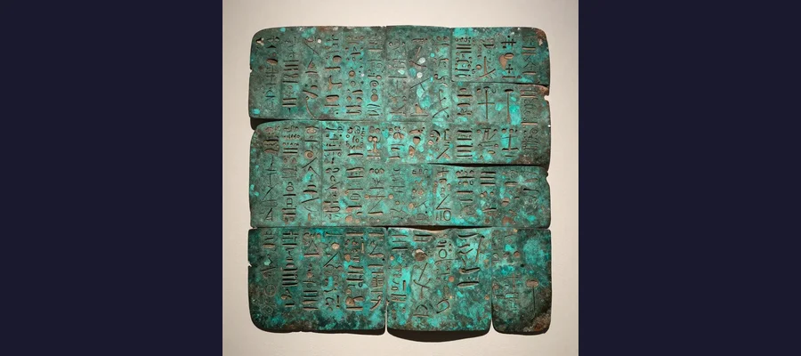
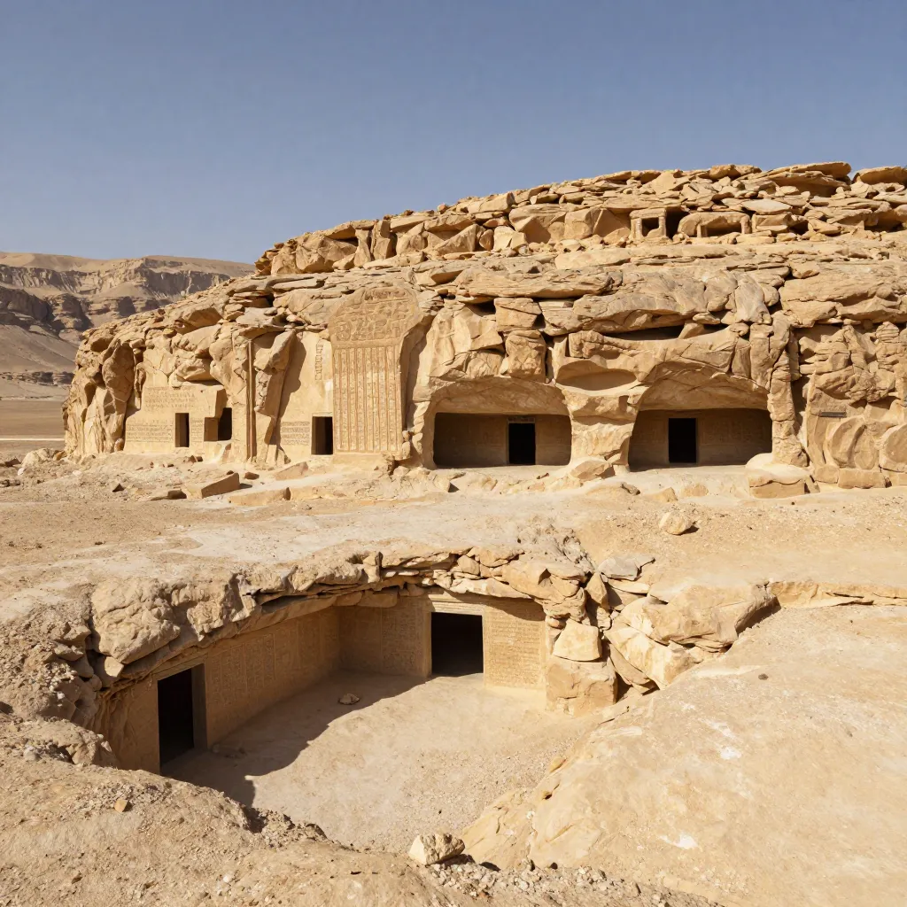

The Copper Scroll Treasure: The Worlds Oldest Treasure Map and Billions in Hidden Gold

The Copper Scroll, found in a desert cave in 1952, lists 64 treasure locations worth billions. Not a single cache has ever been found.
On March 14, 1952, archaeologists excavating Cave 3 near the ancient ruins of Qumran on the shores of the Dead Sea made a discovery that was extraordinary even by the standards of the Dead Sea Scrolls. Alongside the parchment and papyrus manuscripts that had been transforming our understanding of ancient Judaism since 1947, they found something completely unexpected: two rolls of corroded copper, about 2.4 meters in total length, engraved with text in ancient Hebrew. When the copper was finally cut into strips and unrolled at the Manchester College of Technology in 1955–1956, researchers were stunned. The text was not a religious document, a biblical commentary, or a community rule — the subjects of every other Dead Sea Scroll. It was a treasure map. The Copper Scroll listed 64 locations where vast quantities of gold, silver, coins, vessels, and precious artifacts had been hidden, with detailed directions for finding each cache. The estimated total value of the described treasure runs into the billions of dollars in modern terms. Over seventy years later, not a single item described in the Copper Scroll has been definitively found. It is the oldest treasure map in existence — and it may be the greatest unsolved puzzle in the history of archaeology.
The Copper Scroll stands apart from every other document found at Qumran. It was written on metal, not parchment. Its Hebrew is closer to Mishnaic Hebrew than to the literary language of the other scrolls. Its content is purely practical — no prayers, no prophecies, no community rules, just a list of hiding places with quantities and directions. Its very existence raises questions that have divided scholars for decades: Who wrote it? When? Was the treasure real? And if it was real, where did all that wealth come from — and where did it go?
A Scroll Unlike Any Other: Discovery and Decipherment
The Dead Sea Scrolls, first discovered by Bedouin shepherds in 1947, are among the most important archaeological finds of the twentieth century. They include the oldest known copies of the Hebrew Bible, community rules of the Jewish sect known as the Essenes, apocalyptic texts, and commentaries that have transformed our understanding of Judaism in the centuries around the time of Jesus. The scrolls were found in eleven caves near Qumran, a ruin on the northwestern shore of the Dead Sea. Most were written on parchment or papyrus — organic materials that survived for two thousand years in the extraordinarily dry climate of the Judean desert. But the scroll found in Cave 3 was different. It was written on copper — specifically, copper mixed with about one percent tin. When found, the copper had corroded so badly over two millennia that the metal had become brittle oxide, and the two rolls could not be unrolled by conventional means.
For three years, the copper rolls sat in the Jordan Archaeological Museum in Amman while scholars debated how to open them without destroying them. Finally, in 1955–1956, the scrolls were sent to the Manchester College of Technology in England, where Professor H. Wright Baker devised a solution: the rolls were carefully cut into 23 flat strips using a fine saw, a process that allowed the text to be read but inevitably destroyed the original physical form of the scroll. The transcription was supervised by John Marco Allegro, a member of the original Dead Sea Scrolls editorial team, who immediately recognized that the contents were unlike anything else found at Qumran.
💰 The Value of the Treasure
The quantities of precious metals described in the Copper Scroll are staggering. Using the ancient unit of the talent (approximately 33 kilograms or 75 pounds), the scroll describes caches totaling an estimated 4,600 talents of gold and silver — potentially over 150 metric tons of precious metal. At modern prices, this would be worth approximately $3 to $6 billion, depending on the gold-to-silver ratio. Individual entries describe caches such as "seventeen talents of silver" (worth roughly $700,000 in silver alone), "six hundred talents of gold," and dozens of smaller deposits of coins, vessels, and consecrated offerings. The sheer scale of the wealth described has led some scholars to argue that the treasure must be symbolic or mythological — that no real community could have possessed such enormous wealth. Others counter that the described quantities, while vast, are not impossible for the Temple of Jerusalem, which received tribute and donations from Jewish communities across the ancient world for centuries.

The Copper Scroll, cut into 23 strips to be unrolled at Manchester College of Technology in 1955-56, remains one of the most enigmatic artifacts ever found.
64 Hiding Places: Reading the World's Oldest Treasure Map
The text of the Copper Scroll, now designated 3Q15 in scholarly notation, consists of twelve columns of Hebrew text engraved into the copper surface. It lists 64 locations (some scholars count 63 or 65, depending on interpretation) where treasure has been hidden. Each entry typically includes a direction ("In the ruin of...", "Under the steps heading eastward..."), a measurement** ("forty cubits," "three cubits from the bottom"), and a quantity** ("seventeen talents of silver," "six hundred talents of gold"). Some entries also include cryptic Greek letters whose significance is debated — they may be reference markers, numerical codes, or abbreviations whose meaning has been lost.
The locations described are scattered across the Judean wilderness, Jerusalem, and the surrounding region. Many refer to specific landmarks — cisterns, reservoirs, tombs, ruins, and underground passages — that could potentially be identified. Some are general enough to be located ("the valley of Achor," "the mouth of the gorge of the "); others are frustratingly vague or reference features that have vanished over two millennia. The directions often read like a guide for someone already familiar with the landscape:
- Column I, Item 1: "In the ruin of Horebbah which is in the valley of Achor, under the steps heading eastward about forty feet: lies a chest of silver that weighs seventeen talents."
- Column I, Item 3: "Nine hundred talents are concealed by sediment towards the upper opening, at the bottom of the big cistern in the courtyard of the peristyle."
- Column I, Item 6: "Enter into the hole of the waterproofed Reservoir of Manos, descend to the left, forty talents of silver lie three cubits from the bottom."
- Column II, Item 11: "In the irrigation conduit of [...] the north side of the pool, dig down three cubits: seven talents of silver and four gold bars."
Who Wrote the Copper Scroll — and When?
The authorship and dating of the Copper Scroll are among the most contested questions in Dead Sea Scrolls scholarship. The scroll's Hebrew is closer to the Mishnaic Hebrew of the second century CE than to the literary Hebrew of the other scrolls. Its paleography (letter forms) and orthography (spelling conventions) suggest a date between approximately 50 and 100 CE. Several theories have been proposed:
- The Essene theory — The scroll was created by the Essene community at Qumran, who cached their communal wealth before the Roman destruction of their settlement around 68 CE. However, most scholars find it unlikely that a relatively small ascetic sect could have accumulated such enormous wealth.
- The Temple treasure theory — The scroll records the hiding places of treasures from the Second Temple of Jerusalem, spirited away by priests fleeing the Roman siege of Jerusalem in 70 CE under Titus. This theory, supported by scholars including Manfred Lehmann and Emile Puech, would explain the vast quantities of gold and silver and the references to "consecrated" offerings — items dedicated to the Temple.
- The Bar Kokhba theory — The scroll dates to the Bar Kokhba Revolt (132–136 CE), when Jewish rebels fighting the Romans hid valuables across the Judean wilderness. This would explain the later Hebrew dialect and the care taken to record the hiding places.
- The symbolic theory — The treasure described is not real. The scroll is a literary or symbolic text, perhaps describing spiritual treasures or serving as a work of religious imagination. Some scholars have noted that the quantities seem impossibly large and the directions too precise to be practical.
🔍 The Treasure Hunters
The Copper Scroll has inspired numerous treasure-hunting expeditions since its contents became public. John Marco Allegro, the scholar who first transcribed the scroll, became convinced that the treasure was real and mounted an expedition to the Dead Sea region in the early 1960s, searching for the described locations. He found nothing. In the 1990s and 2000s, the archaeologist Richard Freund of the University of Hartford used ground-penetrating radar and other modern techniques to investigate several of the Copper Scroll's locations, including a site near Qumran where a distinctive "chest" was detected underground. The "chest" turned out to be a natural geological formation. Other treasure hunters have included amateur archaeologists, religious enthusiasts, and even teams sponsored by television production companies. None have found verified treasure from the Copper Scroll. The failure of these searches has strengthened the argument that either the landmarks described have been lost to time, the treasure was found and removed centuries ago, or the scroll describes treasure that never existed. The quest echoes other famous searches for lost wealth and knowledge, from the Ark of the Covenant to the Holy Grail.

The caves of Qumran, where the Copper Scroll was discovered in Cave 3 in 1952, overlooking the Dead Sea.
Real Treasure or Ancient Fantasy? The Great Debate
The central question about the Copper Scroll is whether the treasure it describes ever existed. The scholarly community is deeply divided. On one side are the "realists" who argue that the extraordinary care taken to engrave the text on durable metal — rather than ephemeral parchment — suggests that the information was considered too important to risk losing. Nobody engraves a fantasy on copper. The specific, detailed directions — including measurements in cubits, references to identifiable landmarks, and the use of Greek reference letters — suggest a practical document intended for actual use. On the other side are the "skeptics" who point out that the described quantities of gold and silver are enormously large — perhaps too large to be credible — and that no corroborating evidence of such vast wealth has ever been found.
A middle position, gaining support in recent years, holds that the scroll describes a genuine attempt to hide real treasure — but treasure that was subsequently recovered by the original owners or found by others in antiquity. The Romans, who destroyed Jerusalem in 70 CE and conducted extensive mopping-up operations in the Judean wilderness over the following decades, would have had every incentive to search for hidden Jewish wealth. If the treasure was found and removed by Roman soldiers, by later Byzantine or Islamic authorities, or by local treasure hunters in the intervening centuries, the scroll would still be genuine — but the caches it describes would be long empty.
🌐 The Copper Scroll and the Fate of the Second Temple
One of the most tantalizing theories connects the Copper Scroll to the fate of the Second Temple of Jerusalem, destroyed by the Romans under Titus in August 70 CE. The Temple was the center of Jewish religious life and the repository of enormous wealth — donations, tithes, consecrated vessels, and precious furnishings accumulated over five centuries. The Roman historian Josephus, an eyewitness to the siege, described the Temple treasures in lavish detail and noted that the Romans carried away enormous quantities of gold and silver after the city fell. But some scholars have argued that the Temple priests, seeing the Roman advance, may have secreted away a portion of the treasure — the most sacred or most portable items — and hidden them in caches across the Judean wilderness before the city fell. If the Copper Scroll records these hiding places, it may be the last surviving record of the lost treasures of the Second Temple — treasures that would be of incalculable historical and religious significance, comparable in importance to the rediscovery of Pompeii or the tomb of Tutankhamun. The possibility that these treasures — including perhaps items associated with the Rosetta Stone era of ancient documentation or relics from the time of Atlantis-level ancient civilizations — still lie buried somewhere in the Judean hills continues to fire the imagination of archaeologists and treasure hunters alike.
📦 The Greatest Treasure Map Never Solved
The Copper Scroll occupies a unique position in archaeology — it is simultaneously the most promising and the most frustrating treasure map ever discovered. It promises wealth beyond imagining: billions of dollars in gold and silver, hidden in 64 locations across the Holy Land, described in a document that has survived for two thousand years. And yet, despite seven decades of searching, not a single item from the scroll's list has been conclusively identified. The Copper Scroll may be the record of a real treasure, hidden by desperate priests fleeing the destruction of Jerusalem and never recovered. It may describe wealth that was found and removed centuries ago by people who left no record. It may be a symbolic text — a religious or literary exercise that never corresponded to physical reality. Or it may be something else entirely, a document whose purpose we have not yet understood. What is certain is that the Copper Scroll remains one of the most enigmatic artifacts ever discovered — a message from the ancient world that we can read but cannot fully comprehend. It sits in the Jordan Museum in Amman, its 23 copper strips inscribed with directions to wealth that may or may not exist, in places that may or may not be identifiable, written by people whose identities remain unknown. The greatest treasure map in history is open, legible, and completely unsolved. Perhaps that is its real treasure — the enduring mystery itself. Like the silent warriors of the Terracotta Army, the Copper Scroll stands as a monument to a world we can glimpse but never fully recover.
Frequently Asked Questions
What is the Copper Scroll?
The Copper Scroll (designated 3Q15) is one of the Dead Sea Scrolls, found in Cave 3 at Qumran in March 1952. Unlike the other scrolls, which are written on parchment or papyrus and contain religious texts, the Copper Scroll is inscribed on copper metal and contains a list of 64 locations where gold, silver, and other treasures are said to be hidden. It is the only known treasure map from the ancient world and has never been deciphered in the sense that none of the described caches have been found.
How much is the Copper Scroll treasure worth?
The quantities described in the scroll — if taken literally — represent an estimated 4,600 talents of gold and silver, or roughly 150 metric tons of precious metal. At modern commodity prices, this would be worth approximately $3 to $6 billion. However, many scholars question whether these quantities should be taken literally, and some argue that the treasure described may be symbolic rather than real.
Who hid the treasure described in the Copper Scroll?
Nobody knows for certain. The leading theories include: the Essenes (the Jewish sect that inhabited Qumran), who may have hidden their communal wealth before the Roman destruction of their settlement around 68 CE; priests of the Second Temple in Jerusalem, who may have spirited away Temple treasures before the Roman siege in 70 CE; and Bar Kokhba rebels (132–136 CE), who may have hidden wealth during the second major Jewish revolt against Rome. The scroll's language and letter forms suggest a date between approximately 50 and 100 CE.
Has anyone found treasure from the Copper Scroll?
No verified finds have ever been made. Several expeditions have searched for the described caches, beginning with John Marco Allegro in the 1960s and continuing with modern archaeological teams using ground-penetrating radar and other advanced technology. None have produced confirmed discoveries. The failure of these searches has led to increased skepticism about whether the treasure ever existed, though some scholars argue that the caches may have been found and emptied in antiquity.
📖 Recommended Reading
Want to learn more? Check out Secrets of the Dead Sea Scrolls on Amazon for a deeper dive into this fascinating topic. (As an Amazon Associate, we earn from qualifying purchases.)
References & Further Reading
- Wikipedia: Copper Scroll — Comprehensive overview of the scroll's discovery, contents, and the scholarly debate
- Britannica: Dead Sea Scrolls — Authoritative summary of the broader scroll collection and their significance
- Wikipedia: Dead Sea Scrolls — The full collection of ancient manuscripts found at Qumran
- Ancient Origins: The Lost Treasure of the Dead Sea Copper Scroll — Detailed analysis of the scroll's contents and the various theories about its origin
- Interesting Engineering: Clues to the Largest Treasure Ever Buried — Analysis of the scroll's treasure quantities and their modern equivalents
- Wikipedia: Qumran — The archaeological site near where the Dead Sea Scrolls were discovered
Editorial note: reconstructions are continuously revised as imaging and inscription studies improve. See our Editorial Policy.